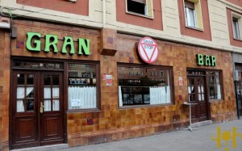
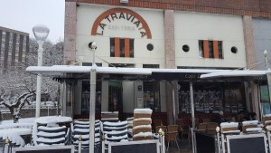
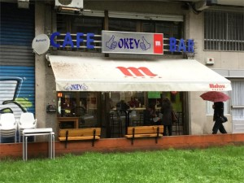

Aqui encontraras cafeterias de todo tipo que esten por la zona de Bilbao y alrededores,
tambien podras consultar la carta, comprar y hacer pedidos a traves de la pagina web de cada local
|
Gran Stop  San Ignacio, 183, 48013
+34635705825 |
La Traviata  Catalunya Kalea, 1, 48015
+34944754013 |
Cafeteria Fervi Arbolagana Kalea, 48015
+34618989611 |
Cafeteria Okey Enekuri Etorb., 2, 48014
+34944762354 |